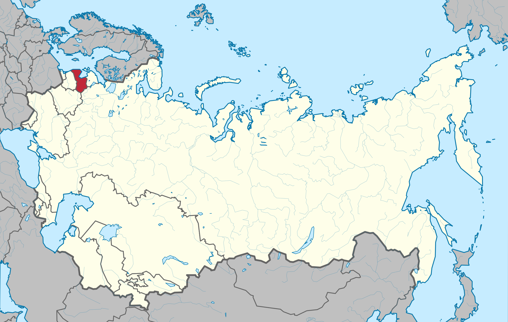

ЛитССР
Латви́йская Сове́тская Социалисти́ческая Респу́блика (латыш. Latvijas Padomju Sociālistiskā Republika) — одна из республик Советского Союза. Площадь — 64,58 тысячи км². Население — 2 623 000 человек (1986). Столица — Рига.
Карта ЛитССР c 27 октября 1924 года — 31 августа 1991 года года
[ОБРАТНО НА ГЛАВНУЮ] [ОБРАТНО К РЕСПУБЛИКАМ]